Setup
This quickstart assumes you have a working installation of Deform cli. To verify cli is installed, use the following command:
$ deform
If you get deform: command not found you must install the CLI by
following instructions.
$ pip install cli-deform
Registration
If you are new to Deform you must create an account:
$ deform signup -e email@example.com -p mypassword
On the email you will get a confirmation code. Use it for confirming you identity:
$ deform confirm CODE
When you confirm the email you automatically become logged in.
$ deform whoami
You are email@example.com
Let's create a new project:
$ deform project create -d '{"_id": "mysquare", "name": "My square"}'
Project created
Note
Be careful with the _id.
It should be unique across the all the Deform projects (even if it doesn't belong to your account!).
If you have some conflict errors just set the project's id as mysquare1, mysquare2, etc...
Let's look at the mysquare project info:
$ deform project get mysquare
If you created the project with the id mysquare3000 then use it:
$ deform use-project mysquare3000
Switched to project mysquare3000
We will use mysquare project id through all the documentation. Just don't forget
to use your own id.
Collections
Deform follows the MongoDB paradigm
and operates over collections and documents. To see what collections are already in
project you can type command:
$ deform collections find --pretty
{
"_id": "_files",
"name": "Files",
"schema": ...,
"indexes": ...,
...
},
...
Every project in Deform contains system collections which names starts with _ prefix.
You can't remove them. Read more about system collections.
Documents
Let's create a document in a collection called venues:
$ deform document create -c venues -d '{"name": "Starbucks"}'
{"_id": "5754065208888f00052b7315","name": "Starbucks"}
We don't have to create the collection before inserting documents. If there is no collection
venues in the project it will be created automatically.
If you don't provide _id for the document it will be generated. _id is the only
system field. It should be unique and can't be changed. We can remove the document
and recreate it with a custom id:
$ deform document remove 5754065208888f00052b7315 -c venues
Document removed
$ deform document create -c venues \
-d '{"_id": "starbucks", "name": "Starbucks"}'
{"_id": "starbucks","name": "Starbucks"}
Schema
Deform doesn't force you to use a schema for the documents in any collection. This
is the power of the nosql databases.
You can create a venue without the name property but with a rating property:
$ deform document create -c venues \
-d '{"_id": "mcdonalds", "rating": 5}'
{"_id": "mcdonalds","rating": 5}
But what if you want the name property to be mandatory? That's where you can change
the schema of the venues collection.
Deform uses JSON schema and by default it allows you to insert
any properties. Let's look at the venues collection schema:
$ deform collection get venues --property schema --pretty
{
"type": "object",
"properties": {},
"additionalProperties": true
}
Providing additionalProperties is true you are not limited to use any properties.
Let's make the name property required:
$ deform collection save venues --property schema.properties.name \
-d '{"type": "string", "required": true}'
Property updated
Let's look at the schema again:
$ deform collection get venues --property schema --pretty
{
"type": "object",
"properties": {
"name": {
"type": "string",
"required": true
}
},
"additionalProperties": true,
}
Let's try to create a venue without the name property:
$ deform document create -c venues -d '{"_id": "kfc", "rating": 5}'
Validation error:
* "name" - name is required
Oops. Validation error. That's what we've expected. Let's provide the name:
$ deform document create -c venues \
-d '{"_id": "kfc", "name": "KFC", "rating": 5}'
{"_id": "kfc","name": "KFC","rating": 5}
The document've been successfully created. You may be curious what've happened with
the mcdonalds venue? Actually nothing, it's still in the venues collection:
$ deform documents find -c venues --pretty
{
"_id": "starbucks",
"name": "Starbucks"
}
{
"_id": "mcdonalds",
"rating": 10
}
{
"_id": "kfc",
"name": "KFC",
"rating": 5
}
Deform doesn't force you to migrate existing documents when the collection's schema is changed. But when you try to update a document you will be asked to provide the required property:
$ deform document update mcdonalds -c venues -d '{"rating": 6}'
Validation error:
* "name" - name is required
Let's set the name for McDonalds:
$ deform document update mcdonalds -c venues -d '{"name": "McDonalds"}'
{"_id": "mcdonalds","name": "McDonalds","rating": 5}
Files
Our venues collection contains venues with the names but that is not enough.
Let's add some photos!
Deform operates with files like with any data. Let's add an array property which will contain all the venue photos:
$ deform collection save venues --property schema.properties.photos \
-d '{"type": "array", "items": {"type": "file"}}'
Property saved
Let's look at the schema:
$ deform collection get venues --property schema --pretty
{
"type": "object",
"properties": {
"name": {
"type": "string",
"required": true
},
"photos": {
"type": "array",
"items": {
"type": "file"
}
}
},
"additionalProperties": true,
}
Providing directory /tmp/ on your local machine contains two photos:
1.jpg
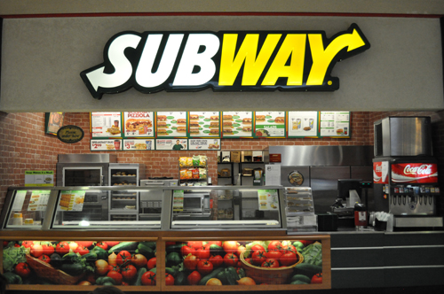
2.jpg
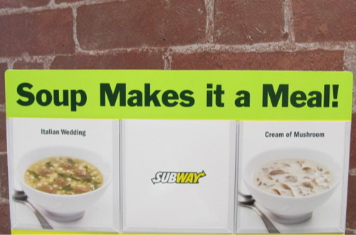
Let's create a new venue:
$ deform document create -c venues \
-d '{
"_id":"subway",
"name":"Subway",
"photos": [
@"/tmp/1.jpg",
@"/tmp/2.jpg"
]
}'
The output is:
{
"_id": "subway",
"name": "Subway",
"photos": [
{
"_id": "57540c5b94d5de000528f78a",
"collection_id": "venues",
"content_type": "image/jpeg",
"date_created": "2016-06-05T11:26:19.810844798Z",
"document_id": "subway",
"last_access": "2016-06-05T11:26:19.810844798Z",
"md5": "18517f889a64cf4e00e14fe9c85f8cac",
"name": "1.jpg",
"size": 185679
},
{
"_id": "57540c5c94d5de000528f78c",
"collection_id": "venues",
"content_type": "image/jpeg",
"date_created": "2016-06-05T11:26:20.262771094Z",
"document_id": "subway",
"last_access": "2016-06-05T11:26:20.262771094Z",
"md5": "75b44ca2849e817b58435d6a80fff5fd",
"name": "2.jpg",
"size": 171555
}
]
}
Every item in photos attribute contains information about saved files.
Let's get a content of the first image:
$ deform document get-file subway -c venues \
--property photos[0] > download.jpg
If you open downloaded image you will see the original 1.jpg:
download.jpg
Website
Let's build a small website with two pages:
- List page of the all venues
- Detail page of the one venue
We will use python with Flask and requests. Install both packages first:
$ pip install Flask requests
Note
There is a deform's python client. Use it for your python projects. For this tutorial we'll use HTTP API for more general overview.
Let's create a mysquare.py file and write some code:
from flask import Flask
import requests
app = Flask(__name__)
@app.route("/")
def venues_list():
return 'Venues list'
@app.route("/<venue_id>")
def venue_detail(venue_id):
return 'Venue with id "%s"' % venue_id
if __name__ == "__main__":
app.run(debug=True)
Run the site:
$ python mysquare.py
* Restarting with fsevents reloader
* Debugger is active!
* Debugger pin code: 120-616-853
Website should be running on you local machine.
Open address http://127.0.0.1:5000/ in your web browser. You should see the venues list page:

If you open http://127.0.0.1:5000/hello in your web browser you should see the venue detail page:
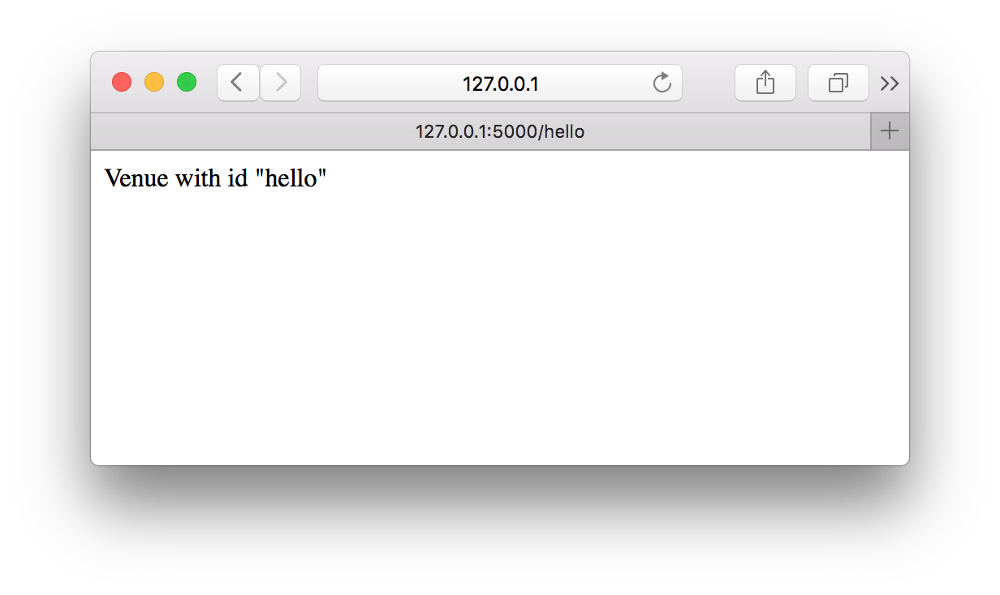
Retrieving the venues
We know how to retrieve the documents from the collections using Deform CLI. For retrieving the venues for the website we will use Deform's HTTP API.
For retrieving documents from the projects collection you must make the GET HTTP
request for url compound by next pattern:
https://<project-id>.deform.io/api/collections/<collection-id>/documents/
Let's try to make the HTTP request inside the venues_list function.
from flask import Flask
import requests
app = Flask(__name__)
@app.route("/")
def venues_list():
# make HTTP requests
response = requests.get(
'https://mysquare.deform.io/api/collections/venues/documents/'
)
# raise error if bad response code
response.raise_for_status()
# return raw content from the response
return response.content
@app.route("/<venue_id>")
def venue_detail(venue_id):
return 'Venue with id "%s"' % venue_id
if __name__ == "__main__":
app.run(debug=True)
Let's try to open http://127.0.0.1:5000 again. You should see something like this:

We got 401 UNAUTHORIZED response code. Why did it happen?
Deform does not allow to work with the project data without authorization. When you've been using CLI you were authorized with login and password. How to authorize our website application? Let's create a token.
Creating a token
If you want to authorize any client making changes or retrieving data from any
project you must create the authorization token. Let's create the token
and allow the clients using this token to read the documents from the venues collection:
$ deform document create -c _tokens -d '{
"_id":"TFWaTgjB",
"name": "Read venues",
"is_active": true,
"permission": {
"allow": {
"read": [
{
"what": "document",
"where": "venues"
}
]
}
}
}'
{
"_id": "TFWaTgjB",
"is_active": true,
"name": "Read venues",
"permission": {
"allow": {
"read": [
{
"what": "document",
"where": "venues"
}
]
}
}
}
Let's use the token for retrieving document with HTTP API. You must provide
Authorization header with value compound by template Token <token-id>:
from flask import Flask
import requests
app = Flask(__name__)
@app.route("/")
def venues_list():
response = requests.get(
'https://mysquare.deform.io/api/collections/venues/documents/',
# use authorization token
headers={
'Authorization': 'Token TFWaTgjB'
}
)
response.raise_for_status()
return response.content
@app.route("/<venue_id>")
def venue_detail(venue_id):
return 'Venue with id "%s"' % venue_id
if __name__ == "__main__":
app.run(debug=True)
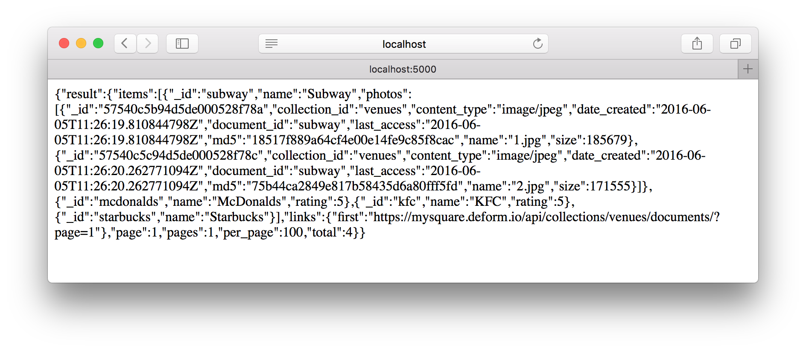
Cool, we've retrieved all the documents from the venues collection.
The final step would be to retrieve a venue document for the venue detail view.
We should add some logic to venue_detail function:
from flask import Flask
import requests
app = Flask(__name__)
@app.route("/")
def venues_list():
response = requests.get(
'https://mysquare.deform.io/api/collections/venues/documents/',
headers={
'Authorization': 'Token TFWaTgjB'
}
)
response.raise_for_status()
return response.content
@app.route("/<venue_id>")
def venue_detail(venue_id):
# retrieving a document by venue_id
response = requests.get(
'https://mysquare.deform.io/api/collections/venues/documents/%s/' % (
venue_id,
),
headers={
'Authorization': 'Token TFWaTgjB'
}
)
if response.status_code == 404:
# if no document with venue_id then return 404 error
return 'Venue with id "%s" is not found' % venue_id, 404
else:
response.raise_for_status()
return response.content
if __name__ == "__main__":
app.run(debug=True)
If you visit http://127.0.0.1/kf you will get 404 error because there is no
venue with _id equals kf:
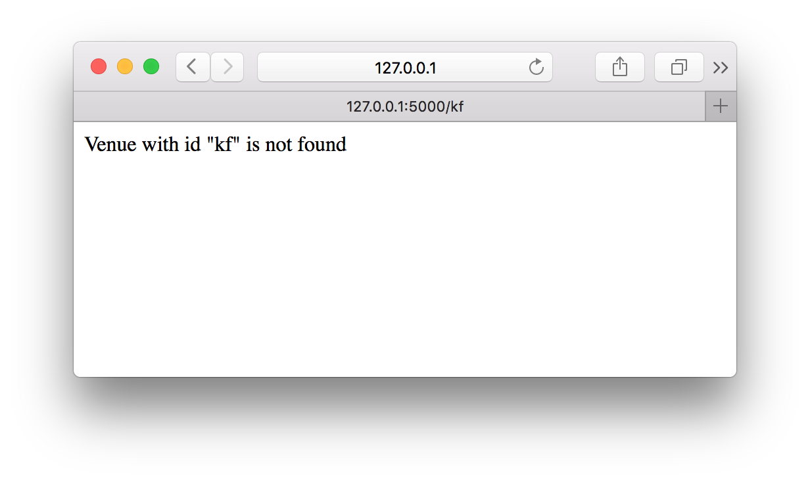
But there is the venue with _id equals kfc on page http://127.0.0.1/kfc:
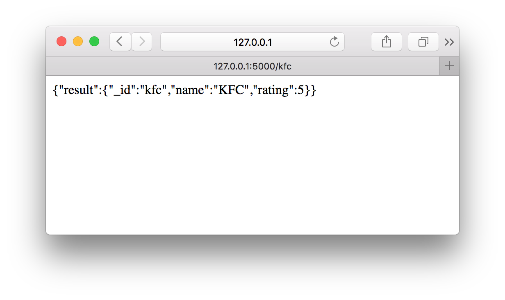
Creating templates
We've finished with retrieving data from Deform and now let's add templates for rendering HTML pages.
from flask import Flask
# function for rendering templates
from flask import render_template
import requests
app = Flask(__name__)
@app.route("/")
def venues_list():
response = requests.get(
'https://mysquare.deform.io/api/collections/venues/documents/',
headers={
'Authorization': 'Token TFWaTgjB'
}
)
response.raise_for_status()
# render venues_list.html template
return render_template(
'venues_list.html',
venues=response.json()['result']['items']
)
@app.route("/<venue_id>")
def venue_detail(venue_id):
response = requests.get(
'https://mysquare.deform.io/api/collections/venues/documents/%s/' % (
venue_id,
),
headers={
'Authorization': 'Token TFWaTgjB'
}
)
if response.status_code == 404:
return 'Venue with id "%s" is not found' % venue_id, 404
else:
response.raise_for_status()
# render venue_detail.html template
return render_template(
'venue_detail.html',
venue=response.json()['result']
)
if __name__ == "__main__":
app.run(debug=True)
response.json() function converts json from response to the python's native object.
This object will be used inside the templates. Let's add the template for the venues list:
templates/venues_list.html
<ul>
{% for venue in venues %}
<li>
<a href="{{ venue._id }}">{{ venue.name }}</a>
</li>
{% endfor %}
</ul>
If you open index page of the website you will see a list of the links for the every venue detail page:
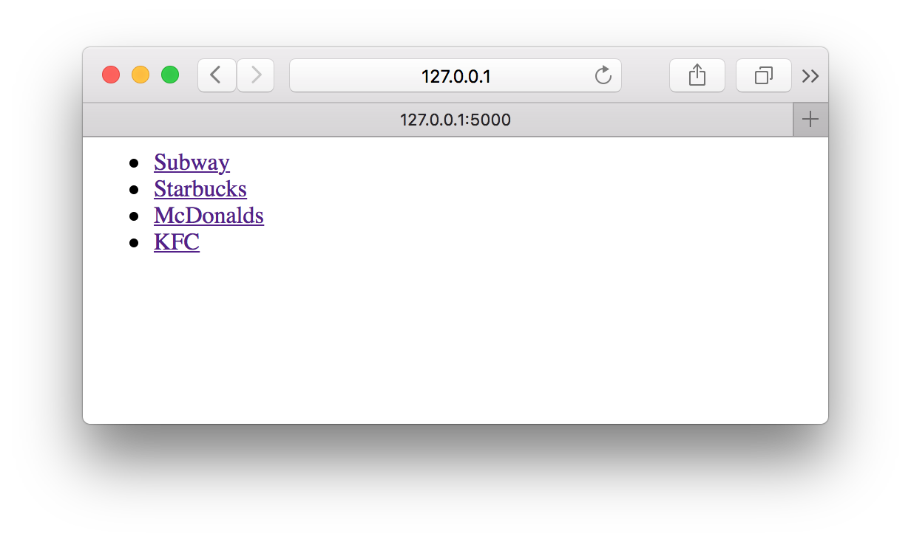
Let's add the venue detail template:
templates/venue_detail.html
<div>
<h3>{{ venue.name }}</h3>
<div>
{% for photo in venue.photos %}
<img src="https://mysquare.deform.io/api/collections/venues/documents/{{venue._id}}/photos[{{loop.index-1}}]/content/?token={{token}}"
style="width: 100px; height: 100px"
alt="" />
{% endfor %}
</div>
</div>
Open the http://127.0.0.1:5000/subway page:
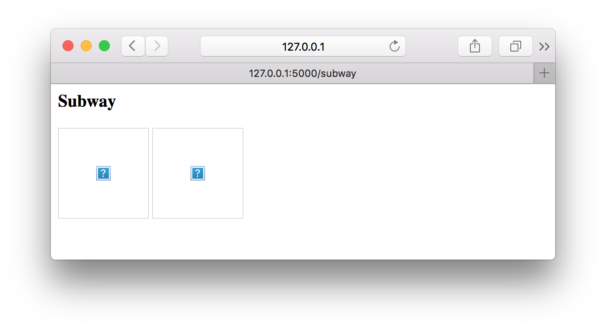
As you remember it's possible to get file's content with CLI. For retrieving file's content with HTTP API you can build a full url by next pattern:
https://<project-id>.deform.io/api/collections/<collection-id>/documents/<document-id>/<path-to-file-property>/content/
Why don't we see the images on the venue page? Let's look at the developer console:
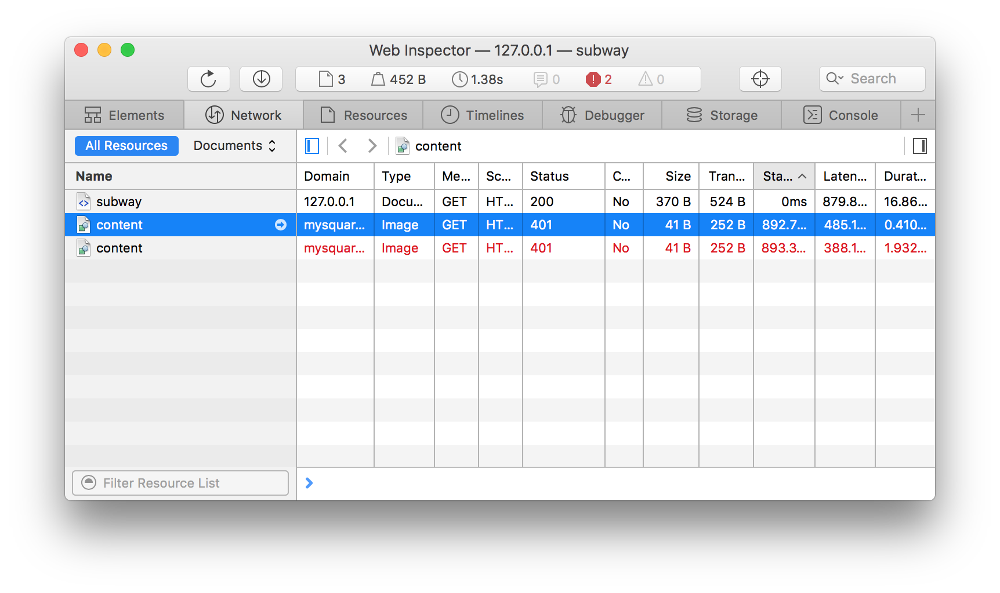
You should remember that Deform does not allow to work with the project data without authorization.
Browser is yet another client that should authorize it's requests to the HTTP API.
It's possible to send authorization token with token query parameter. For example:
https://<project-id>.deform.io/.../content/?token=<token>
Let's send the token to the template context:
from flask import Flask
from flask import render_template
import requests
app = Flask(__name__)
# store token value in a variable
TOKEN = 'TFWaTgjB'
@app.route("/")
def venues_list():
response = requests.get(
'https://mysquare.deform.io/api/collections/venues/documents/',
headers={
# reuse the variable
'Authorization': 'Token %s' % TOKEN
}
)
response.raise_for_status()
return render_template(
'venues_list.html',
venues=response.json()['result']['items']
)
@app.route("/<venue_id>")
def venue_detail(venue_id):
response = requests.get(
'https://mysquare.deform.io/api/collections/venues/documents/%s/' % (
venue_id,
),
headers={
# reuse the variable
'Authorization': 'Token %s' % TOKEN
}
)
if response.status_code == 404:
return 'Venue with id "%s" is not found' % venue_id, 404
else:
response.raise_for_status()
return render_template(
'venue_detail.html',
venue=response.json()['result'],
# send token to the template
token=TOKEN
)
if __name__ == "__main__":
app.run(debug=True)
Use the token in image's content url:
templates/venue_detail.html
<div>
<h3>{{ venue.name }}</h3>
<div>
{% for photo in venue.photos %}
<!-- Use the token as the query parameter (at the and of the next line) -->
<img src="https://mysquare.deform.io/api/collections/venues/documents/{{venue._id}}/photos[{{loop.index-1}}]/content/?token={{token}}"
style="width: 100px; height: 100px"
alt="" />
{% endfor %}
</div>
</div>
Now all the images are shown.
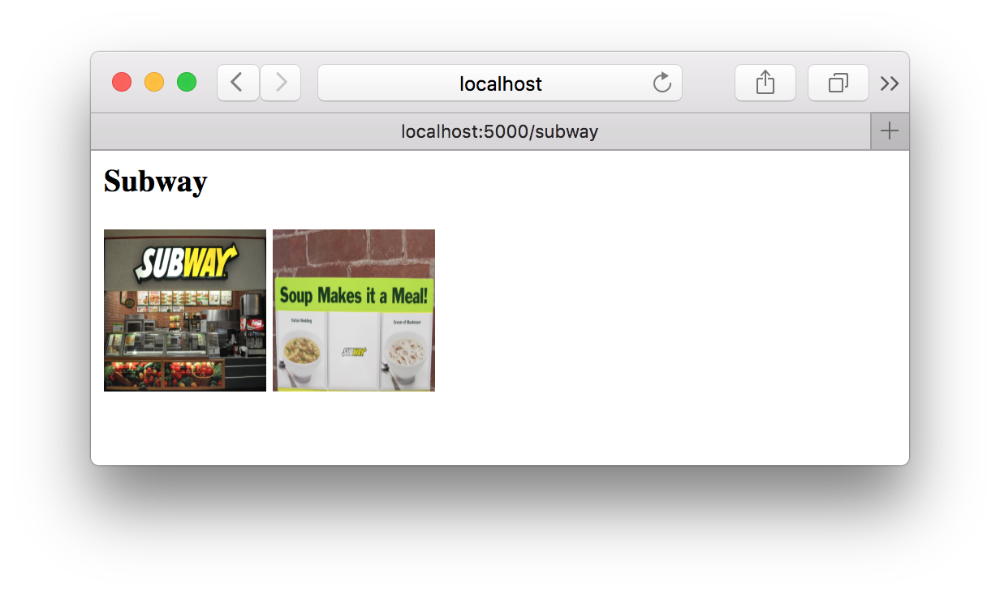
Search
Let's add a search input at the venues list page. We're going to use a new
info field for venues. Deform comes with full-text search indexes. Let's add an full-text index:
$ deform collection update venues -d '{
"indexes": [
{
"type": "text",
"property": "info",
"language": "en"
}
]
}'
Let's update info field for every venue:
$ deform document save subway -c venues --property info \
-d '"Breakfast, Sandwiches, Salads & More"'
$ deform document save mcdonalds -c venues --property info \
-d '"the largest chain of hamburger fast food restaurants"'
$ deform document save kfc -c venues --property info \
-d '"Kentucky Fried Chicken"'
$ deform document save starbucks -c venues --property info \
-d '"coffee company and coffeehouse chain"'
You can try to search by CLI:
$ deform documents find -c venues --text 'chicken or coffee' --pretty
{
"_id": "kfc",
"info": "Kentucky Fried Chicken",
"name": "KFC",
"rating": 5
}
{
"_id": "starbucks",
"info": "coffee company and coffeehouse chain",
"name": "Starbucks"
}
Add search form to the template:
templates/venues_list.html
<form action="" method="get">
<input type="text" name="search" value="{{ search_text }}">
<input type="submit" value="search">
</form>
<ul>
{% for venue in venues %}
<li>
<a href="{{ venue._id }}">{{ venue.name }}</a>
</li>
{% endfor %}
</ul>
Add search logic to the view:
from flask import Flask
from flask import render_template
# flask request object
from flask import request
import requests
app = Flask(__name__)
TOKEN = 'TFWaTgjB'
@app.route("/")
def venues_list():
# get search text
search_text = request.args.get('search')
if search_text:
# search documents if search query
response = requests.post(
'https://mysquare.deform.io/api/collections/venues/documents/',
headers={
'Authorization': 'Token %s' % TOKEN,
'X-Action': 'find'
},
json={
'payload': {
'text': search_text
}
}
)
else:
# get all documents if no search query
response = requests.get(
'https://mysquare.deform.io/api/collections/venues/documents/',
headers={
'Authorization': 'Token %s' % TOKEN
}
)
response.raise_for_status()
return render_template(
'venues_list.html',
venues=response.json()['result']['items'],
# send search_text to template
search_text=search_text
)
@app.route("/<venue_id>")
def venue_detail(venue_id):
response = requests.get(
'https://mysquare.deform.io/api/collections/venues/documents/%s/' % (
venue_id,
),
headers={
# reuse the variable
'Authorization': 'Token %s' % TOKEN
}
)
if response.status_code == 404:
return 'Venue with id "%s" is not found' % venue_id, 404
else:
response.raise_for_status()
return render_template(
'venue_detail.html',
venue=response.json()['result'],
# send token to the template
token=TOKEN
)
if __name__ == "__main__":
app.run(debug=True)
Open the venues list page and try to search for a chicken or coffee:

Processing
There is one problem with our full-text search. If you try to search for a venue name you won't see any results.
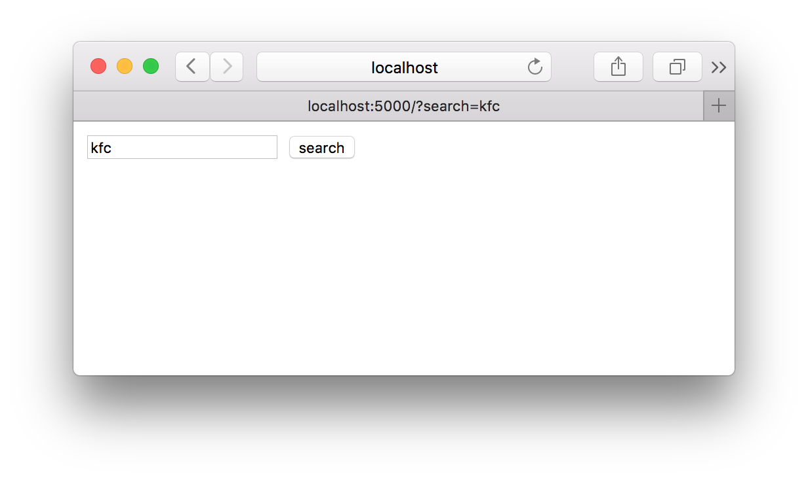
That's because we have full-text index on info field. If this field doesn't contain
venue's name it won't be found. How would we solve such kind of problem?
Deform comes with template processor.
Processors should be assigned to collection's schema properties. Every time
document is created or updated processors do their job. We're going to set
full-text index to another field called search_data and automatically save
venue's name and info to that field.
First of all we must add info field to the schema. Only the fields from schema
could be used in processors:
$ deform collection save venues --property schema.properties.info -d '{
"type": "string"
}'
Let's add the new search_data field and the template processor to the venues collection schema:
$ deform collection save venues --property schema.properties.search_data -d '{
"type": "string",
"processors": [
{
"name": "template",
"in": {
"context": {
"name": {
"property": "name"
},
"info": {
"property": "info"
}
},
"syntax": {
"value": "handlebars"
},
"template_string": {
"value": "{{name}}, {{info}}"
}
}
}
]
}'
Let's check the mcdonalds venue:
$ deform document get mcdonalds -c venues --pretty
{
"_id": "mcdonalds",
"info": "the largest chain of hamburger fast food restaurants",
"name": "McDonalds",
"rating": 5
}
As mentioned above processors works only when document is created or updated. We have to "touch" our documents to perform processing:
$ deform document save mcdonalds -c venues \
-d "$(deform document get mcdonalds -c venues)" --pretty
{
"created": false,
"result": {
"_id": "mcdonalds",
"info": "the largest chain of hamburger fast food restaurants",
"name": "McDonalds",
"rating": 5,
"search_data": "McDonalds, the largest chain of hamburger fast food restaurants"
}
}
Let's touch other venues:
$ deform document save subway -c venues \
-d "$(deform document get subway -c venues)"
$ deform document save kfc -c venues \
-d "$(deform document get kfc -c venues)"
$ deform document save starbucks -c venues \
-d "$(deform document get starbucks -c venues)"
The last step is to change the full-text index field:
$ deform collection update venues -d '{
"indexes": [
{
"type": "text",
"property": "search_data",
"language": "en"
}
]
}'
Let's search for KFC or coffee: